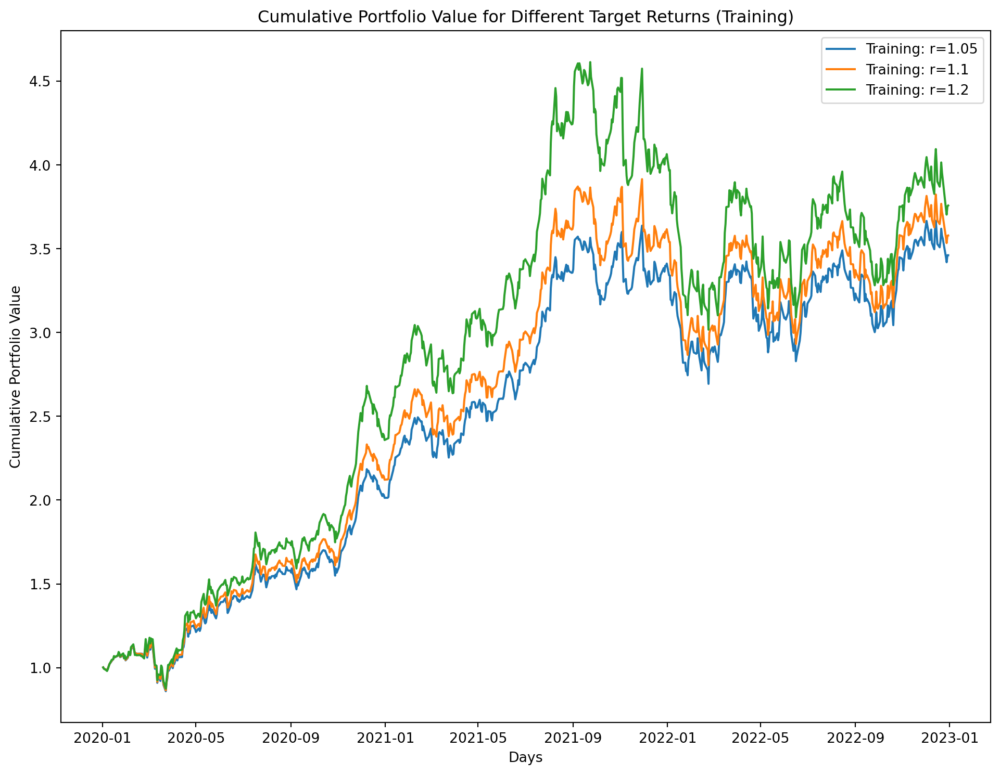
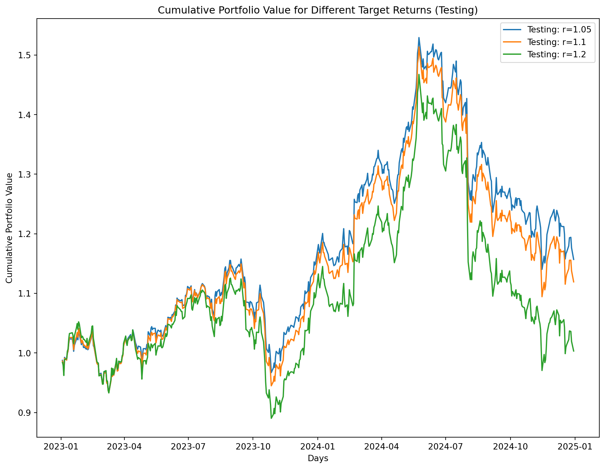
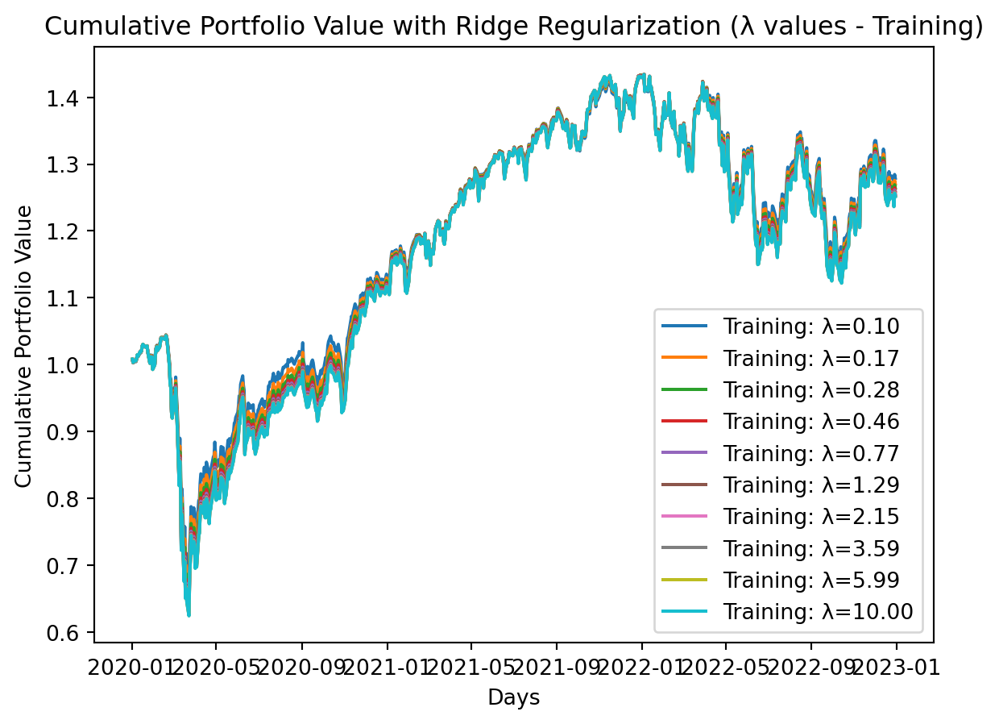
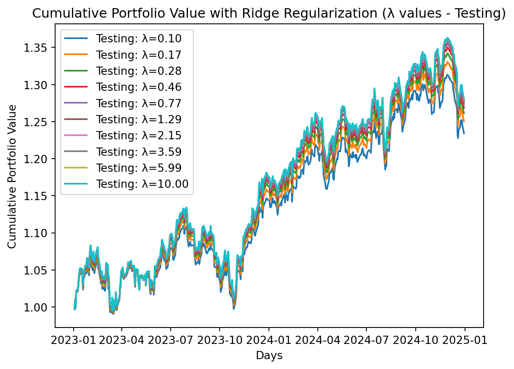

DATA 609: Final Project - A Simple Convex Optimization on Regulatory Financial Reporting
Author
Eddie Xu
Introduction
All financial institutions are required to report their financial data in accordance with multiple regulatory frameworks such as Basel III and Dodd Frank Act. Due to the complexities with some of the framework, it can be challenging for some financial companies, particularly smaller regional or community banks, to maximize their returns while ensure that they are to be in regulatory compliance on limited resources and times. Because of that, it can cause potential reporting errors and may lead to financial institutions being penalized with fines of millions dollars and may have a significant impact on the financial market.
Abstract
For this project, it is modified from the Lab 2 Problem 3 and the goal is to leverage convex optimization applications for a simple regulatory financial reporting problem. Specifically, the optimal allocation of a proposed bank’s capital across different assets (cash, bonds, stocks, etc) will be determined in order to maximize return using the Markowitz Portfolio Optimization and minimize the market risks while ensuring compliance with regulatory capital requirements under the Basel III.
Data Pulling
For data sources, the data from Lab 2 Problem 3 will be used since it has all of financial assets needed for a small financial institution’s portfolio. It contains ontains information on daily asset returns from 2020-2024 for a group of assets, consisting mostly of large-cap stocks as exchange traded funds that correspond to US Treasury Bonds and Notes with varying maturities.
# load dependenciesimport numpy as npimport pandas as pdimport cvxpy as cpimport matplotlib.pyplot as pltimport datetime as dtfrom scipy.stats import norm # read in datastock_url ='https://media.githubusercontent.com/media/georgehagstrom/DATA609Spring2025/refs/heads/main/website/assignments/labs/labData/stock_returns.csv'fin_tidy_data = pd.read_csv(stock_url)fin_tidy_data['date'] = pd.to_datetime(fin_tidy_data['date'])print(fin_tidy_data)
For the convex optimization problem, the data will be split into two time periods, a training period (2020-2022) and a testing period (2022-2024).The log return will be used on the Markowitz Portfolio Optimization where the number of target returns (1.05, 1.10, and 1.20) are defined and the market risks are minimized while ensuring compliance with regulatory capital requirements under the Basel III.
Since the constraint is based on the Basel III requirements, the capital ratio is set to 8% and captial available is set to 10%. Not only that, conditional Value at Risks is a risk measure that show the average of extreme losses that exceed Value at Risk and is defined as 95% in the constraint as well.
# filter data into training (2020-2022) and testing (2022-2024) periodstrain_period = fin_tidy_data[(fin_tidy_data['date'] >='2020-01-01') & (fin_tidy_data['date'] <='2022-12-31')]test_period = fin_tidy_data[(fin_tidy_data['date'] >'2022-12-31')]# convert the data with the log returntrain_data = train_period.pivot(index='date', columns='Company', values='log_return')test_data = test_period.pivot(index='date', columns='Company', values='log_return')# calculate the annual mean and covariance matrixmu = np.exp(0.5* train_data.sum()) -1gamma = train_data.cov().values# define variablesr_targets = [1.05, 1.10, 1.20]X = train_data.values T, n = X.shapeoptimal_weights = {}portfolio_cum_returns_train = {}portfolio_cum_returns_test = {}# define parameters based on Basel III and CVaRcapital_ratio =0.08capital_available =0.10risk_weights = np.ones(n)alpha =0.95max_cvar =0.05for r in r_targets:# define the variable w = cp.Variable(len(mu)) z = cp.Variable(T) VaR = cp.Variable()# calculate the portfolio portfolio_returns = X @ w losses =- portfolio_returns# calculate the conditional Value at Risk cvar = VaR + (1/ ((1- alpha) * T)) * cp.sum(z)# define the objective function: 0.5 * w^T * Gamma * w objective = cp.Minimize(0.5* cp.quad_form(w, gamma))# define the constraints constraints = [cp.sum(w) ==1, w.T @ mu >= r, w >=0, cp.sum(cp.multiply(w, risk_weights)) * capital_ratio <= capital_available, z >=0, z >= losses - VaR, cvar <= max_cvar]# Solve the problem problem = cp.Problem(objective, constraints) problem.solve()# store the optimal weight optimal_weights[r] = w.value# calculate portfolio returns for training period portfolio_returns_train = train_data.dot(w.value) portfolio_cum_returns_train[r] = np.cumprod(1+ portfolio_returns_train)# calculate portfolio returns for testing period portfolio_returns_test = test_data.dot(w.value) portfolio_cum_returns_test[r] = np.cumprod(1+ portfolio_returns_test)# plot cumulative returns for training and testing periodsplt.figure(figsize=(12, 9))for r in r_targets: plt.plot(portfolio_cum_returns_train[r], label=f'Training: r={r}')plt.title('Cumulative Portfolio Value for Different Target Returns (Training)')plt.legend()plt.xlabel('Days')plt.ylabel('Cumulative Portfolio Value')plt.show()plt.figure(figsize=(12, 9))for r in r_targets: plt.plot(portfolio_cum_returns_test[r], label=f'Testing: r={r}')plt.title('Cumulative Portfolio Value for Different Target Returns (Testing)')plt.legend()plt.xlabel('Days')plt.ylabel('Cumulative Portfolio Value')plt.show()


Since it is commonly known that optimal portfolios constructed using the Markowitz procedure perform much more poorly out of sample compared to in sample, the ridge regularization and the set target return of 20% will be applied to the problem and be reevaluated.
# set the target returnr =0.20# define the lambda rangelambda_values = np.logspace(-1, 1, 10) # define dicts for storing resultsoptimal_weights_ridge = {}portfolio_cum_returns_train_ridge = {}portfolio_cum_returns_test_ridge = {}for lam in lambda_values:# define the variable w = cp.Variable(len(mu)) z = cp.Variable(T) VaR = cp.Variable()# define the objective function: 0.5 * w^T * (Gamma + lambda * I) * w objective = cp.Minimize(0.5* cp.quad_form(w, cp.psd_wrap(gamma + lam * np.eye(len(mu)))))# define the constraints constraints = [cp.sum(w) ==1, w.T @ mu == r, w >=0, cp.sum(cp.multiply(w, risk_weights)) * capital_ratio <= capital_available, z >=0, z >= losses - VaR, cvar <= max_cvar]# define the optimization problem problem = cp.Problem(objective, constraints)# Solve the problem problem.solve()# store the optimal weights optimal_weights_ridge[lam] = w.value# calculate portfolio returns for training data portfolio_returns_train = train_data.dot(w.value) portfolio_cum_returns_train_ridge[lam] = np.cumprod(1+ portfolio_returns_train)# calculate portfolio returns for testing data portfolio_returns_test = test_data.dot(w.value) portfolio_cum_returns_test_ridge[lam] = np.cumprod(1+ portfolio_returns_test)# plot the lamda training periodfor lam in lambda_values: plt.plot(portfolio_cum_returns_train_ridge[lam], label=f'Training: λ={lam:.2f}')plt.title('Cumulative Portfolio Value with Ridge Regularization (λ values - Training)')plt.legend()plt.xlabel('Days')plt.ylabel('Cumulative Portfolio Value')plt.show()# plot the lamda testing periodfor lam in lambda_values: plt.plot(portfolio_cum_returns_test_ridge[lam], label=f'Testing: λ={lam:.2f}')plt.title('Cumulative Portfolio Value with Ridge Regularization (λ values - Testing)')plt.legend()plt.xlabel('Days')plt.ylabel('Cumulative Portfolio Value')plt.show()


Observation and Insights
With a fully invested portfolio, it shows that the optimization tries to meet the